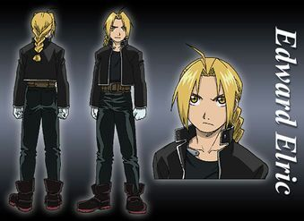
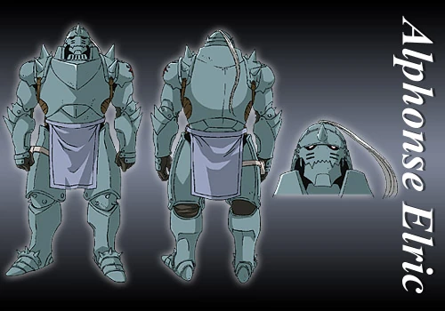
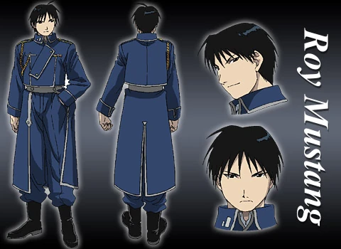
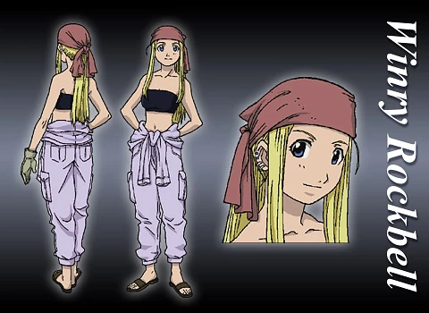
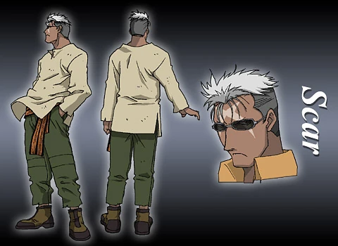
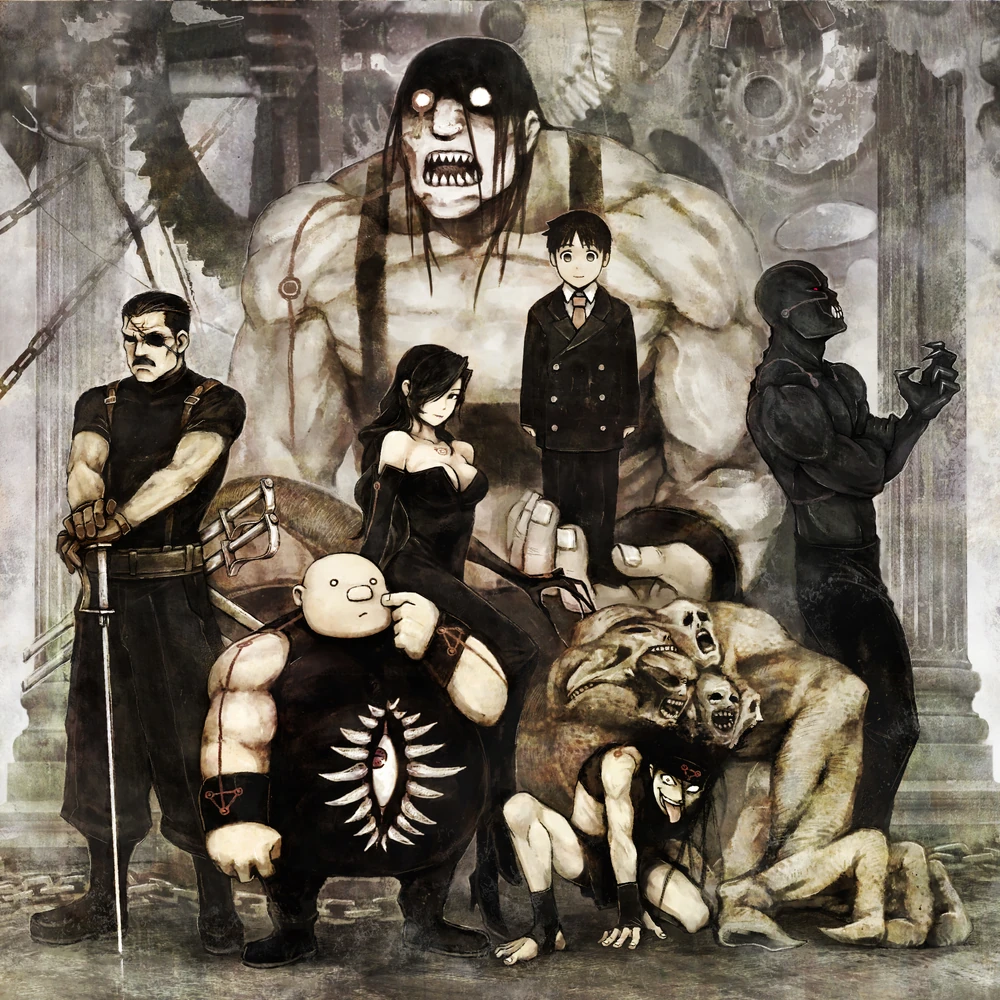

Personagens Principais
Conheça os protagonistas que fazem parte dessa incrível história

Edward Elric
Fullmetal Alchemist
O protagonista da série, conhecido como o Alquimista de Aço. Um prodígio da alquimia que perdeu seu braço e perna em uma transmutação humana fracassada.

Alphonse Elric
Alma Selada
Irmão mais novo de Edward, sua alma está presa a uma armadura após uma transmutação humana mal sucedida.

Roy Mustang
Flame Alchemist
O Alquimista das Chamas, um coronel do exército com ambições de se tornar o líder de Amestris.

Winry Rockbell
Mecânica de Automail
Amiga de infância dos irmãos Elric e especialista em próteses mecânicas (automail).

Scar
Vingador de Ishval
Um sobrevivente da Guerra Civil de Ishval que busca vingança contra os Alquimistas Estatais.

Homunculus
Os Sete Pecados
Seres artificiais criados através da alquimia, cada um representando um dos sete pecados capitais.